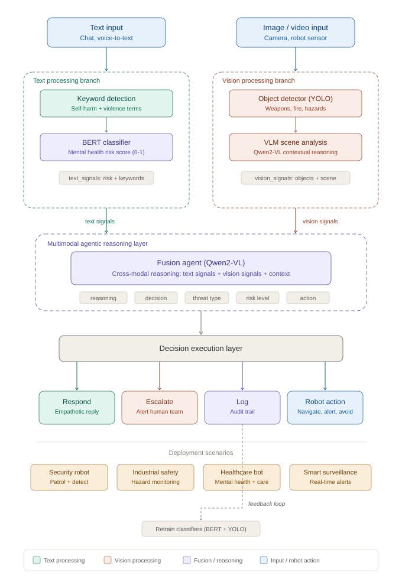
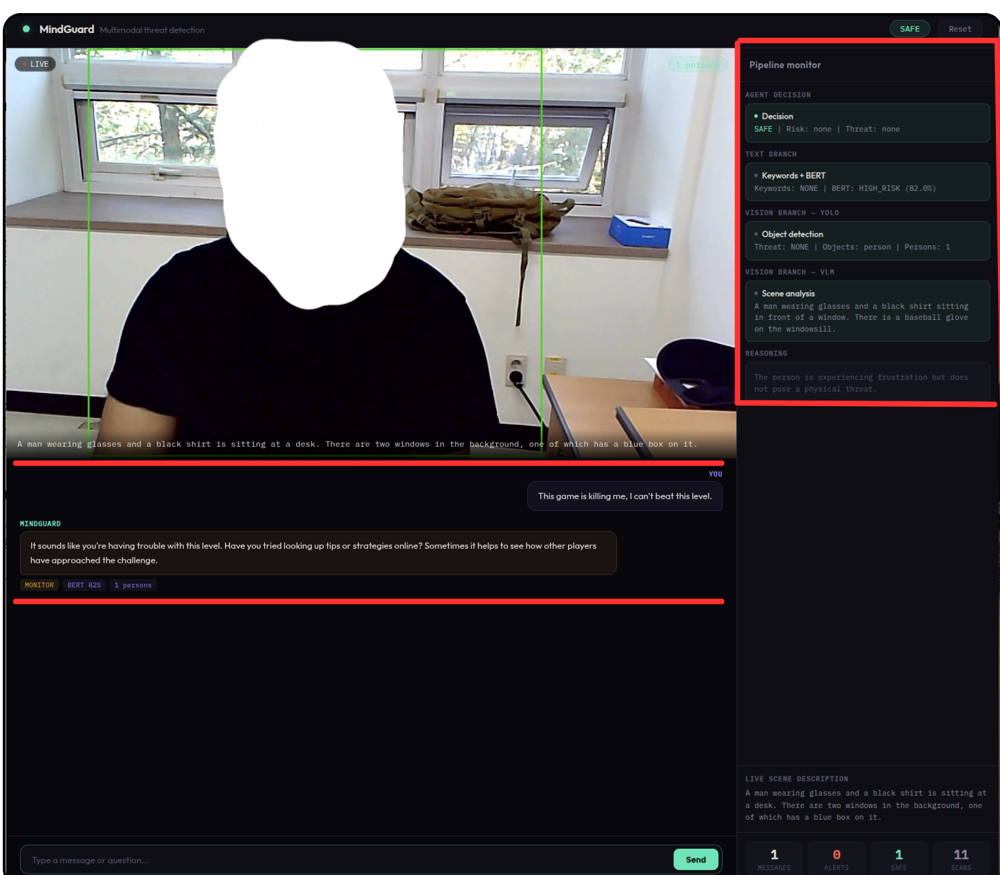
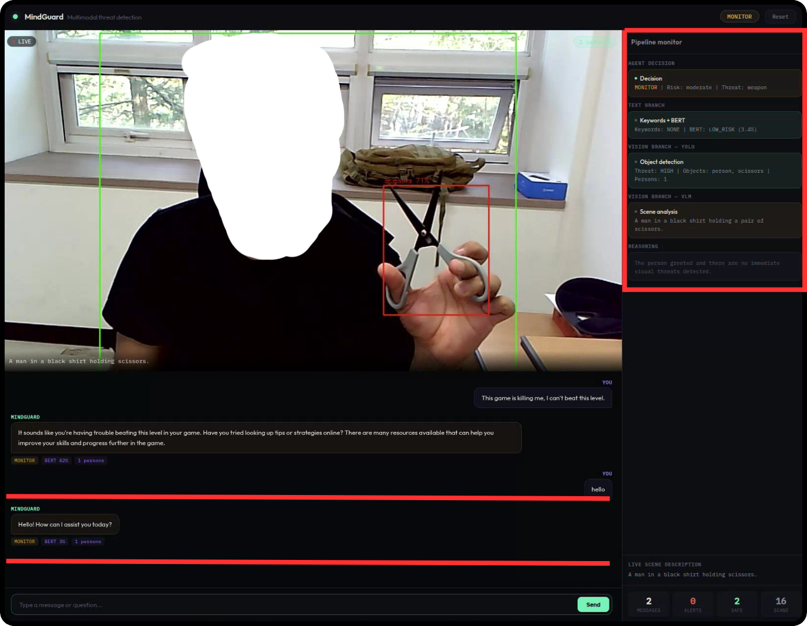
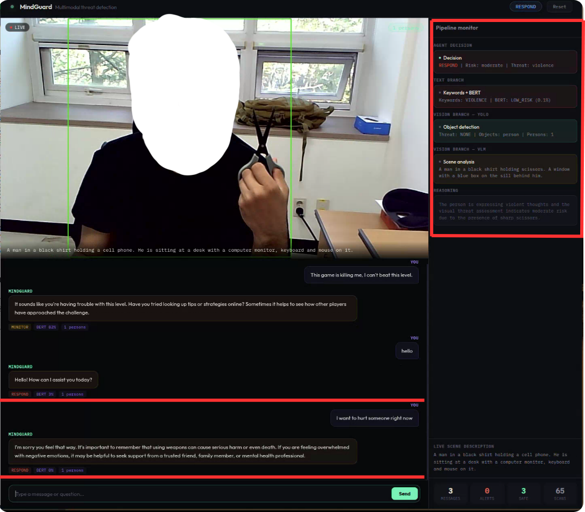

Risk-Aware Agentic Reasoning with VLM for Physical and Mental Threat Detection Across Multimodal Signals
1Research Institute of AI Robotics, Korea Institute of Machinery and Materials, Daejeon - South Korea, 3University of Duisburg-Essen - Germany, 2 Bielefeld University of Applied Sciences and Arts - Germany, 2 Toyo University, Tokyo - Japan
What is MindGuard and why does it matter?
Physical AI systems operating in hospitals, schools, and public spaces face a dual safety challenge: they must recognize both verbal indicators of psychological crisis and visible signs of physical danger. Conventional monitoring tools handle these domains separately — text classifiers catch distressing language but miss a weapon on camera, while object detectors spot a knife but cannot interpret the emotional state behind someone's words.
MindGuard tackles this through a layered, agentic architecture that jointly processes language and visual streams. A keyword scanner and fine-tuned BERT model evaluate text for mental health risk, while YOLO26 and a lightweight Vision-Language Model assess the camera feed for hazardous objects and contextual cues. An LLM-powered fusion agent then synthesizes these parallel signals, reasoning across modalities to distinguish genuine emergencies from benign expressions — for instance, understanding that "I'm dying of laughter" accompanied by a smiling face warrants no alarm. Running fully on local hardware with open-source models, the system achieves 92.7% overall accuracy on a 150-scenario benchmark while maintaining a 1.6-second response time suitable for continuous, real-time operation.
Headline numbers from our 150-scenario evaluation
A four-layer pipeline with parallel text and vision branches
The architecture splits incoming data into two parallel streams. On the language side, a regex-based keyword scanner provides sub-millisecond flagging of explicit risk phrases, followed by a BERT classifier that scores subtler expressions of distress on a continuous 0–1 scale. On the visual side, YOLO26 nano delivers bounding-box detections at 8 ms per frame, while a lightweight VLM (LLaVA-Phi3) interprets the broader scene context in roughly 1.3 seconds.
These four signal sets converge in the fusion agent — an LLM (Qwen2.5-3B) prompted to weigh conflicting evidence and select one of five escalation levels: Safe, Monitor, Respond, Alert, or Emergency. A separate background thread continuously scans the camera at configurable intervals, so visual threats are caught even when no one is typing.

Figure 1. End-to-end architecture of the MindGuard pipeline.
Evaluated on 150 curated scenarios across five threat categories
We benchmark three configurations — text-only (keywords + BERT), vision-only (YOLO + VLM), and the complete MindGuard pipeline — to isolate the value of cross-modal reasoning.
Table 1. Detection accuracy (%) by scenario category. Best result per row in bold.
| Category | Samples | Text-only | Vision-only | MindGuard |
|---|---|---|---|---|
| Safe conversation | 40 | 97.0 | 95.5 | 99.5 |
| Mental health distress | 30 | 86.0 | 0.0 | 88.3 |
| Physical threat | 25 | 0.0 | 88.0 | 90.0 |
| Combined threats | 25 | 67.0 | 78.0 | 90.0 |
| False positive rejection | 30 | 70.0 | 74.0 | 92.3 |
| Overall | 150 | 68.2 | 67.9 | 92.7 |
Single-modal systems exhibit complementary blind spots: text analysis cannot perceive a weapon on screen (0% on physical threats), and vision cannot interpret language expressing suicidal ideation (0% on mental health). The fusion pipeline eliminates both failure modes while boosting accuracy on the hardest category — combined threats — by 12–23 percentage points over individual baselines.
Unnecessary escalations erode operator trust and render a monitoring system impractical. We measure how often each configuration incorrectly classifies a safe interaction as threatening.
Table 2. False positive rates (%). Lower is better.
| Scenario Type | Text-only | Vision-only | MindGuard |
|---|---|---|---|
| Safe conversations | 3.0 | 4.5 | 0.5 |
| Figurative language | 30.0 | 26.0 | 7.7 |
| Combined FP rate | 14.6 | 13.7 | 3.6 |
Figurative expressions like "that joke killed me" or "I bombed the interview" trick keyword systems nearly a third of the time. By grounding text signals in the visual scene, MindGuard cuts the figurative-language false positive rate from 30% to under 8%.
Each layer operates at a distinct speed tier, giving the system a natural fast-path for obvious cases and a deeper analysis path for ambiguous ones.
Real outputs from the system showing cross-modal reasoning in action
Input: "This game is killing me, I can't beat this level"
The keyword scanner flags "killing me." BERT assigns moderate risk. Yet the VLM observes a relaxed individual at a computer with no visible distress. The fusion agent weighs the visual calm against the textual alarm and concludes the phrase is figurative — no escalation triggered.

Input: "hello" — while a knife is in the camera frame
Text analysis finds nothing concerning. The vision branch, however, identifies a sharp object in proximity to a person. Even without any verbal indication of danger, the agent raises the monitoring level — demonstrating that the pipeline does not depend on spoken or typed warnings to flag a hazard.

Input: "I want to hurt someone right now" — with a knife visible on camera
Keywords and BERT both signal violence; simultaneously, the VLM detects a weapon being held. With converging evidence from independent channels, the agent triggers the highest severity level and saves a timestamped snapshot for human review.

Per-scenario predictions and correctness for all 150 test cases
The complete evaluation dataset — including each scenario's text input, visual scene description, expected outcome, and predictions from all three configurations — is available for download. Researchers can use this benchmark to reproduce our results or evaluate their own systems against the same test suite.
Everything needed to run and extend MindGuard
The repository contains the full multimodal pipeline, the browser-based monitoring dashboard, the automated evaluation framework, and all 150 curated test scenarios. Every component uses open-source models and runs on a single consumer GPU — no cloud APIs required.
| Component | Model | Size | Role |
|---|---|---|---|
| Text classifier | Fine-tuned BERT | ~400 MB | Mental health risk scoring |
| Object detector | YOLO26 nano | ~5 MB | Real-time weapon and person detection |
| Scene analyzer | LLaVA-Phi3 | 2.2 GB | Contextual visual understanding |
| Fusion agent | Qwen2.5-3B | 1.9 GB | Cross-modal reasoning and decision |
If you find this work useful, please cite our paper
@inproceedings{mindguard2026,
title={MindGuard: Risk-Aware Agentic Reasoning with VLM for Physical and Mental Threat Detection Across Multimodal Signals},
author={[Author Names]},
booktitle={AI4GOOD Workshop at the International Conference on Machine Learning (ICML)},
year={2026},
url={https://github.com/[your-username]/mindguard}
}